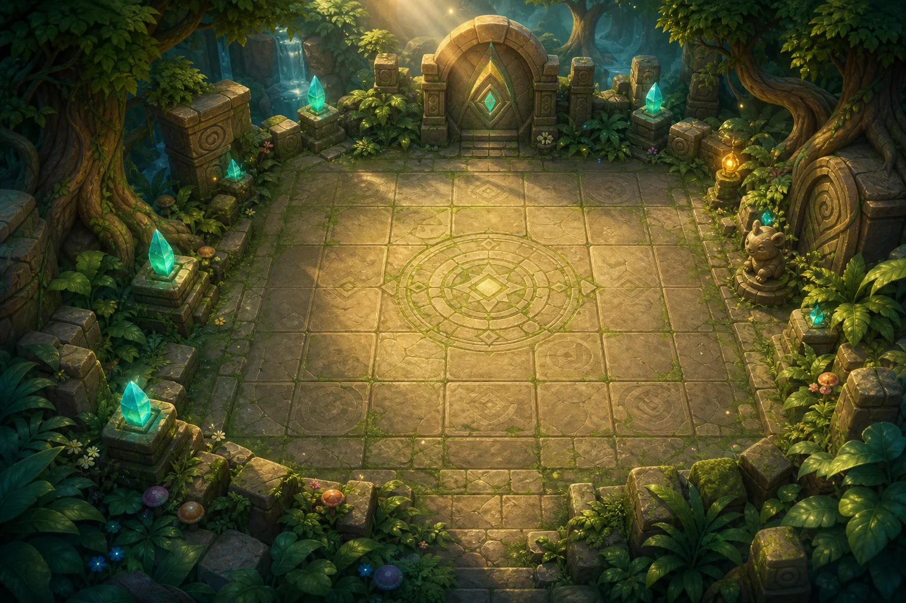

WeightPlay
Animal Rune Tactics
Animal Rune Tactics
0%Enemies0/0
Mission 1
Turn 1


Animal Rune Tactics is a 30-mission turn-based campaign played on a three-by-four rune board. The Lion Guardian, Owl Mage and Turtle Shield each take one action before the enemy turn: move, attack, guard or spend Energy on a distinct Skill. Six five-mission chapters introduce blocked routes, snares, currents, fire, rotating runes and seals, together with enemies that counter, push, silence, mark, drain Energy or create clones. Missions 5, 10, 15, 20, 25 and 30 end with six different phased Bosses. Mission unlocks, hero training and Rune Rewards are saved in this browser.
The Rune Roads connect six animal territories to the Crown Archive. Each road carries a different kind of stabilizing script: woodland paths hold living roots in place, forge marks bind ironwood, tide glyphs regulate flooded chambers, ember circles vent heat, moon runes preserve memory, and the Crown seals keep all five systems synchronized. When the central crown fractured, those scripts began acting without their keepers. Bridges hardened into rubble, roots closed around travelers, currents moved occupied stones, and archive seals protected the very creatures that had damaged them.
The player commands three keepers sent to restore the roads. Lion Guardian is the close-range front fighter, Owl Mage attacks from two cells away, and Turtle Shield guards and heals the group. Clearing a mission means its script is stable enough for the squad to advance. The Stone Stag, Ironroot Rhino, Mirecoil Serpent, Embermane Lion and Eclipse Griffin each control one damaged chapter. Rune Crown Chimera has absorbed parts of every system; defeating it in Mission 30 reconnects the archive without pretending there is an endless Mission 31.
Missions 1-5 teach movement, focus fire, Wolf adjacency, Raven targeting and blocked bridge lanes. Stonehorn Trial refreshes first-hit armor at both thresholds and punishes heroes left in its row.
Missions 6-10 add melee counters, back-line teleporting, Root Snare and pincer formations. Ironroot Rhino turns safe cells into rubble, so the available route changes during the fight.
Missions 11-15 make position move after decisions through Tide and Heron push. Mirecoil Serpent adds column pull and a two-attacker regeneration check.
Missions 16-20 combine temporary burn, straight-line charges and one-use Cooling Runes. Embermane Lion alternates board fire, group pressure and a wounded extra action.
Missions 21-25 restrict Skill timing with silence and ranged marks, then rotate the outer ring. Eclipse Griffin changes which hero can damage it and when a row becomes unsafe.
Missions 26-30 add clones, Energy drain and linked seals before the Crown Gauntlet remixes five earlier rules. Rune Crown Chimera changes terrain at both visible thresholds and summons a clone for the final target-order test.
The board stays three cells wide and four cells tall so every phone decision remains visible without panning. Depth comes from one-action turns: moving to solve a current hazard means giving up that hero's attack, while guarding can be stronger than chasing damage. Six five-mission chapters introduce one vocabulary at a time and then ask the chapter Boss to recombine it. HP rises only once every eight missions and Attack only once every twelve; later pressure therefore comes mainly from terrain, target order, action denial and phase changes. Pointer, touch and a roving arrow-key grid all operate the same logical cells. Unlike Animal Auto Squad's pre-battle formation or Animal Relic Hunters' live movement, Rune Tactics pauses after every decision so the board state itself is the puzzle.
Squad Level, XP, Runes, best mission, unlocked mission, hero levels, Training Slot, saved attack, health and Energy bonuses, and Revive Tokens are stored locally in this browser. No login is required for basic play. Clearing site storage or using another browser may create a separate save. Diamonds are optional platform currency used only for a reward reroll or the confirmed Training Slot; all 30 missions, seven terrain systems, special enemies and six Bosses remain playable without them. Skill Reports describe the completed play session and are not a formal ability test.